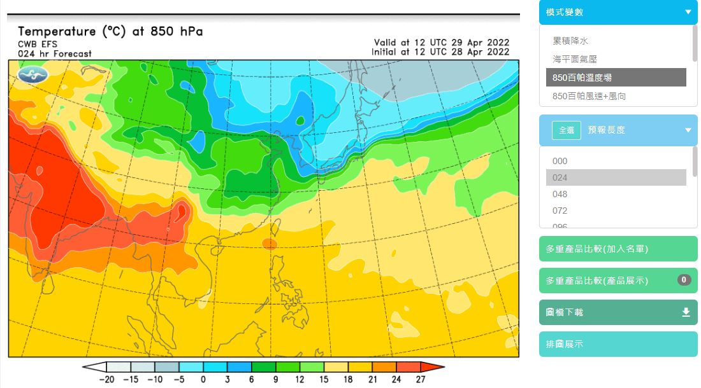

系級與加值產品
全球系級模式 - 亞洲區域 - 850百帕溫度場
- 全球系集預報模式主要是利用全球預報模式的資料作為初始場，透過隨機擾動參數趨勢法(SPPT)加入不同的初始擾動，此方法是在物理趨勢項中使每個time step產生隨機擾動，以達到系集預報的結果，為單一模式的系集系統。系集資料的水平解析度約為41km，共預報45天。
- 資料來源 : 中央氣象局數值天氣預報
全球系級模式 - 亞洲區域 - 850百帕溫度場

全球系集預報模式，是以20組系集成員預測未來45天的形式之預報產品，其中也包含不同層場(溫度，濕度和氣壓等)。
在圖表中系集成員的資訊以及時間變化的資訊都沒能呈現出來，因此我設計當點選地圖上的任意點，會呈現出該點之系集預報結果。
藉由圖表可以分析未來三天不同區域的溫度變化，溫差以及海陸差異，圖表經過改良後可以明顯得到溫差的資訊。
因為資料較大故只使用一個層場以及72小時資料做演示。 中央氣象局並沒有公開資料因此使用美國國家海洋暨大氣總署公開之資料